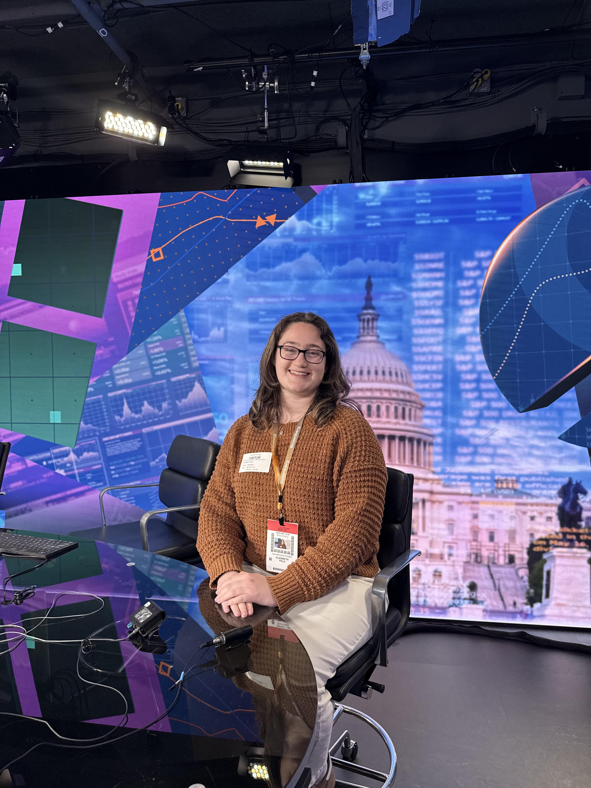

I am a journalism student with a focus on broadcast, radio and documentary news. I work behind the scenes as a producer to showcase news through visual storytelling.I produce multiple news blocks in full, with topics about health, consumer/business, and feature stories. I create trending segments for anchors to talk about for morning shows, written with conversational language. I tease upcoming stories at the end of each block with an active and engaging style. While in the booth, I time and give cues to anchors and reporters and automate packages, graphics, and VO/SOTS. Take a look at my producer reel!
I produce CNS TV, a 30-minute news broadcast, every Tuesday evening from 5:30-6:00 pm. We air on local, national and international stories that hold interest with our cable TV audience. I research and write readers and VOSOTS for the newscasts like government shutdown updates, crime and local businesses. I field produce reporters’ live shots to assist with setup, lighting and coordination with producers in studio. During the show, I watch for breaking news and update the rundown as needed.
I produce and run the Weekly Roundup, a 30-minute hard-news radio show that airs stories that tie into the College Park community and directly affect our audience. I edit reporter packages and readers, maintaining broadcast style and journalistic integrity. Lead weekly pitch meetings for staff reporters. I walk them through different angles for their stories, such as what sources, NAT sound, and writing style to use.
I clip news segments from the morning broadcasts and write stories for FOX45’s website. Some examples include ‘Hometown Hotspot’ segments and a Baltimore County library reading initiative. I shadow reporters and photographers on different assignments and take pictures for the web. I write articles about local press releases and surveys for the web, such as local music festivals and the deputy state fire marshal of the year.
I write, voice and produce 30-second PSAs and radio spots for Catholic events around the DMV area. I use Adobe Audition to create music beds with voice-over talent, producing seamless, engaging PSAs. Assist my station manager with fundraising/development and organizing outreach events.
Cover Catholic Masses and write features within the Archdiocese of Washington, such as special Masses celebrated by the cardinal and events at UMD’s Catholic Student Center. I take pictures to accompany my articles, capturing unique shots of the congregation and celebrants. I work openly and communicate regularly with the paper’s editor.